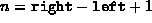

Data Structures and Algorithms
with Object-Oriented Design Patterns in Java
Data Structures and Algorithms
with Object-Oriented Design Patterns in JavaThe running time of merge sort is determined by the running time of the recursive sort method. (The no-arg sort method adds only a constant amount of overhead). The running time of the recursive sort method is given by the following recurrence:
where .
In order to simplify the solution of Equation  we shall assume that
we shall assume that  for some integer
for some integer  .
Dropping the
.
Dropping the  s from the equation we get
s from the equation we get
which is easily solved by repeated substitution:
Therefore, the running time of merge sort is .
 Copyright © 1998 by Bruno R. Preiss, P.Eng. All rights reserved.
Copyright © 1998 by Bruno R. Preiss, P.Eng. All rights reserved.